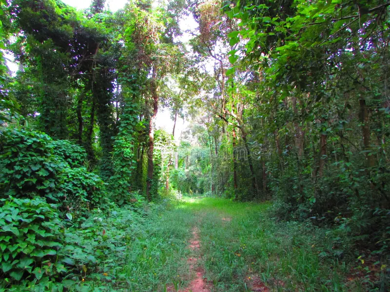

Em um dia eu estava lendo uns livro, e achei pistas sobre um banker de um milionario perdido e vou tentar achar
Você começa no parana indo de curitiba e indo ao interior numa cidade mais remota em mandirituba.
Você esta entrando na mata da amazonia, quando avista uma onça pintada
Você entra na mata de mandirituba mas percebe que ali nao tem nada e vai para amazonia ou desiste
Vocẽ ve uma casa abandonada
Você pisa em uma tampa de ferro
Você entrou achou o banker voce esta rico.